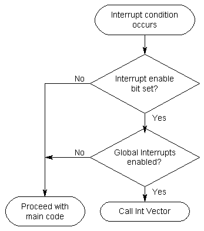

Interrupts, as the name suggests, interrupt the normal program flow. When an interrupt occurs, the ALU calls the correspoding interrupt vector and executes the code at that address. As the interrupt vectors each are only one word long (classics AVR, two words for some megas), you'd usually put a jump instruction there which goes to an Interrupt Service Routine.
The Interrupt vectors start at address 0x0000. The very first one (at 0x0000) is the reset vector. When a reset (internal or external) occurs, this is where the program counter will be set to. That's why almost all programs begin with
| .org 0x0000 rjmp reset ;(maybe something ;in between...) reset: ... |
; tell the assembler that the following is supposed to start at address ; 0x0000. At 0x0000, jump to "reset" ; ; other interrupt vectors can be put here, as well as any other code ; ; ; do this after a reset occurs ; |
Other interrupt vectors will follow the reset interrupt vector. The first ones are the external interrupt lines (INT0, INT1 and so on), then there's timers, UART and other periphrals. Every AVR datasheet has an "Interrupts" section somewhere which will include a list of the available interrupts and their vector addresses. If the table is not entirely filled, you can use single .org statements to set the program counter of the assembler to the right interrupt vector address instead of filling up the table with other useless code. Here are two examples for the 8515 doing the same thing:
| .org 0x0000 rjmp reset rjmp Ext_Int0 rjmp Ext_Int1 reti reti reti reti reti reti rjmp UART_RxC |
; reset vector address (0x0000) ; upon reset, jump to "reset" ; external interrupt 0 vector address (0x0001) ; external interrupt 1 vector address (0x0002) ; (timer 1 capture event) ; (timer 1 compare match A) ; (timer 1 compare match B) ; (timer 1 overflow) ; (timer 0 overflow) ; SPI transfer complete ; UART Receive Complete vector address (0x0009) |
| .org 0x0000 rjmp reset rjmp Ext_Int0 rjmp Ext_Int1 .org 0x0009 rjmp UART_RxC |
; reset vector address (0x0000) ; upon reset, jump to "reset" ; ; ; ; |
So why do some people use the first version? The second one is shorter and, if many interrupt sources are available (have a look ata the mega128!) better to look at if only a few are used.
The first one is safer. If an interrupt occurs (by error) that has no instruction at the reset vector address, the next valid one will be called. So if in the second table the SPI transfer complete interrupt occurs for some unknown reason, the UART_RxC ISR is called. Not good.
Interrupts can occur at any time (unless the Interrupt Enable Bit in the SREG is cleared). Consequently they can also occur if the code is just doing some calculations. These calculations change flags in the status register and are used for the next step of the calculation, or some branch. If the ISR is also changing flags in SREG (for example by testing a register for zero) it can corrupt the calculation that is taking place in the normal application. That's why ISRs should take some precautional steps:
- Preserve the status register (calculation flags might be corrupted in ISR)
- Preserve any registers it uses (as long as they're used in main code as well)
Of course you can also skip all that, given that the following is ensured:
- The ISR doesn't change any status flags
- The ISRs are given dedicated working registers which are not used in the main code.
An ISR wil only be called if it's corresponding interrupt enable bit is set AND if the global interrupt enable bit is set. This gives you the possibility to select the interrupts you allow. The following flow chart might clarify things a bit more:

If interrupts are not wanted during a particular code segment (when doing time critical stuff or calculations), just disable the Global Interrupt Enable Bit (GIE bit) in SREG.
When an ISR is called, the GIE bit is cleared, so that no int can interrupt the ISR. ISRs should return with reti instead of ret, as reti reenables the GIE bit automatically.